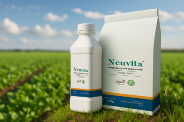
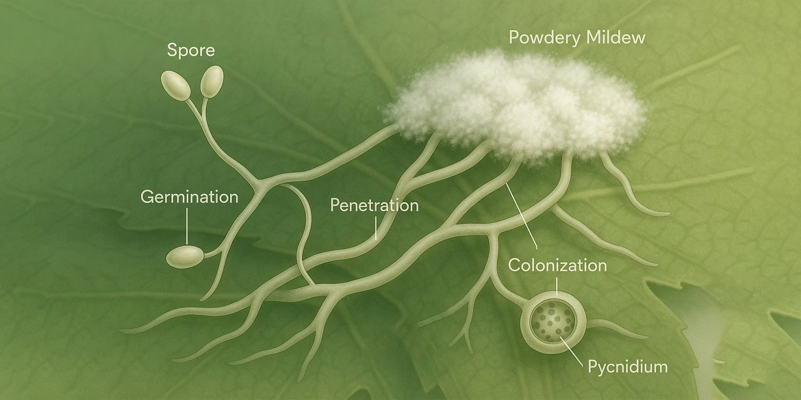

Neuvita is a Pseudomonas fluorescens wettable powder for rhizosphere-based suppression of soil-borne pathogens and nursery disease pressure. It is used to establish beneficial root-zone colonization and improve biological buffering around the root system.
Beneficial rhizobacterium with strong root-zone colonization ability that establishes a protective microbial presence around roots.
Produces siderophores, antibiotics, and lytic enzymes that improve root-zone microbial balance and disease suppression.
Useful in nursery, transplant, and soil-drench programs for early establishment of beneficial rhizosphere populations.
Neuvita WP is suited for soil incorporation, furrow application, root-zone drench, and nursery operations.
Pseudomonas fluorescens colonizes the root surface and rhizosphere, establishing a competitive beneficial microbial presence before pathogen pressure develops.
Competes for iron through siderophore production, depriving soil-borne pathogens of essential nutrients required for growth and infection.
Produces antibiotics, lytic enzymes, and secondary metabolites that directly suppress pathogens and prime plant defense responses.
Supplied with efficacy data, compatibility charts, and SDS to accelerate distributor onboarding and registration programs.

| Crop Stage | Dose per Acre | Water / Carrier | Application Method |
|---|---|---|---|
| Basal soil application or transplant stage | 1.0–2.0 kg/acre | 25–50 kg compost carrier or drip water | Soil incorporation, furrow application, or root-zone drench |
| Nursery or early crop establishment | 500–750 g/acre | 100–150 L | Root-zone drench around seedlings or transplant lines |
One preventive application at sowing or transplanting. Repeat after 20–30 days if wet conditions or disease pressure persists.
Partner with Kriya to supply Pseudomonas fluorescens solutions backed by technical documentation and contract manufacturing.